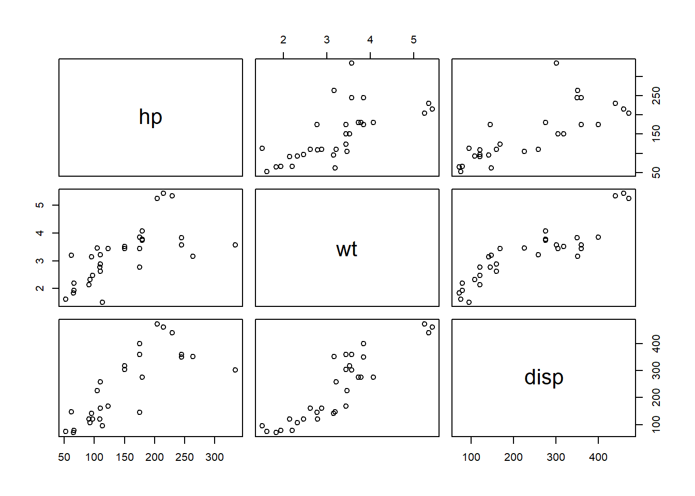

Call:
lm(formula = unemployment ~ ., data = cdi_clean_new)
Residuals:
Min 1Q Median 3Q Max
-2.1924 -0.9682 -0.1311 0.6427 4.0858
Coefficients: (1 not defined because of singularities)
Estimate Std. Error t value Pr(>|t|)
(Intercept) -2.529e+00 5.555e+00 -0.455 0.64999
land_area_std 2.093e-02 4.719e-02 0.443 0.65852
population -4.821e-08 5.534e-07 -0.087 0.93076
X18.34 1.742e-01 7.373e-02 2.363 0.02027 *
X65plus 1.676e-01 7.476e-02 2.242 0.02739 *
physicians_std -2.428e-01 2.280e-01 -1.065 0.28966
hospitals_std -3.151e-01 1.714e-01 -1.838 0.06936 .
crimes_std -3.499e-03 6.556e-03 -0.534 0.59489
high_school 1.996e-02 5.017e-02 0.398 0.69164
bachelor -1.435e-01 6.570e-02 -2.185 0.03146 *
poverty 3.179e-01 8.518e-02 3.732 0.00033 ***
capita_income 1.833e-04 8.293e-05 2.210 0.02962 *
no_high_school NA NA NA NA
---
Signif. codes: 0 '***' 0.001 '**' 0.01 '*' 0.05 '.' 0.1 ' ' 1
Residual standard error: 1.344 on 91 degrees of freedom
Multiple R-squared: 0.4792, Adjusted R-squared: 0.4162
F-statistic: 7.611 on 11 and 91 DF, p-value: 3.759e-09
2.3 Linear Dependency in MLR
Let \(x_1, \cdots, x_{p+1}\) denote the predictor variables. Linear dependency means that there exist constants \(a_1, \cdots, a_{p+1}\), not all zero, such that \[a_1x_1 + a_2x_2 + \cdots + a_{p+1}x_{p+1} = 0.\]
Recall that the LSE is given by \[\hat{\beta} = (X^TX)^{-1}X^Ty\]
When there is linear dependency among the predictor variables, the matrix \(X^TX\) is singular and cannot be inverted. In this situation, LSE is not unique.
2.4 The Design Matrix
To see this, we will look at a toy example with only two predictor variables that are linearly dependent and \(n\)=5
Analysis of Variance Table
Response: y
Df Sum Sq Mean Sq F value Pr(>F)
X1 1 2.7806 2.78056 3.7138 0.1023
Residuals 6 4.4923 0.74871
3.3 Orthogonal Predictors
y on X2 only
Code
anova(lm(y ~ X2))
Analysis of Variance Table
Response: y
Df Sum Sq Mean Sq F value Pr(>F)
X2 1 0.0087 0.00874 0.0072 0.935
Residuals 6 7.2641 1.21068
3.4 Orthogonal Predictors
y on X1 and X2. We noticed that \[SS(\beta_2|\beta_1)=SS(\beta_2)\]
Code
anova(lm(y ~ X1 + X2))
Analysis of Variance Table
Response: y
Df Sum Sq Mean Sq F value Pr(>F)
X1 1 2.7806 2.78056 3.1009 0.1386
X2 1 0.0087 0.00874 0.0098 0.9252
Residuals 5 4.4835 0.89670
3.5 Orthogonal Predictors
y on X2 and X1. We noticed that \[SS(\beta_1|\beta_2)=SS(\beta_1)\]
Code
anova(lm(y ~ X2 + X1))
Analysis of Variance Table
Response: y
Df Sum Sq Mean Sq F value Pr(>F)
X2 1 0.0087 0.00874 0.0098 0.9252
X1 1 2.7806 2.78056 3.1009 0.1386
Residuals 5 4.4835 0.89670
3.6 Orthogonal Predictors
Estimated coefficients
Code
summary(lm(y ~ X1))$coefficients
Estimate Std. Error t value Pr(>|t|)
(Intercept) 1.280454 0.9674130 1.323586 0.2338355
X1 -1.179101 0.6118457 -1.927121 0.1022516
Code
summary(lm(y ~ X2))$coefficients
Estimate Std. Error t value Pr(>|t|)
(Intercept) -0.85187846 4.2968424 -0.19825686 0.8493909
X2 0.06612399 0.7780357 0.08498838 0.9350355
In lecture 10, we used a partial F-test to show that the medical resource variables are useful, although neither is significant after adjusting for all other variables.
In practice, predictor variables are often neither perfectly correlated nor perfectly uncorrelated.
In practice, predictor variables are often correlated, sometimes highly correlated. This is called multicollinearity.
5.2 Consequences of Multicollinearity
Multicollineary does not affect the overall fit of the model or the prediction, as long as there is no extrapolation.
The variance of the LSEs are inflated. Recall that \(Var(\hat{\beta}) = \sigma^2 (X^TX)^{-1}\). \((X^TX)^{-1}\) can have large diagonal elements when it is close to singular (the columns of \(X\) are nearly dependent).
5.3 Consequences of Multicollinearity
When \(X_i\) and \(X_j\) are highly correlated
they provide similar information about the response variable.
the contribution of \(x_i\) given \(x_j\) is already in the model is small.
Similar issues when a predictor is highly correlated with a group of other predictors.
5.4 Consequences of Multicollinearity
When there is multicollinearity, it is difficult to separate their individual effects on the response variable.
In MLR, we interpret the coefficient of a predictor variable as the effect of that variable on the response when holding all other predictors constant. This is not practically possible when the predictors are highly correlated.
5.5 How to Deal with Multicollinearity?
For prediction purpose, multicollinearity is not a big issue as long as there is no extrapolation.
For inference purpose, multicollineary is an issue.
How to detect it?
correlation matrix
variance inflation factor (VIF)
6 Detection
6.1 Motivating Example: mtcars
cars dataset:
y: mpg (miles per gallon)
x1: disp (displacement, cu.in.)
x2: hp (horsepower)
x3: wt (weight, 1000 lbs)
Code
cor(mtcars[,c("hp", "wt", "disp")])
hp wt disp
hp 1.0000000 0.6587479 0.7909486
wt 0.6587479 1.0000000 0.8879799
disp 0.7909486 0.8879799 1.0000000
6.2 Motivating Example: mtcars
Pairwise scatterplots also show that disp is highly correlated with hp and wt.
Code
pairs(mtcars[,c("hp", "wt", "disp")])

6.3 Motivating Example: mtcars
Based on the correlation matrix, disp is highly correlated with hp and wt.
We can qualify the correlation between disp and (hp, wt) using the multiple R-squared from regressing disp on hp and wt, which is the proportion of variation in disp explained by hp and wt.
Code
lm_disp <-lm(disp ~ hp + wt, data=mtcars)summary(lm_disp)$r.squared
[1] 0.8634722
7 VIF
7.1 Definition of Variance Inflation Factor (VIF)
The variance inflation factor (VIF) for a predictor variable \(X_j\) is defined as \[VIF_j = \frac{1}{1 - R_j^2},\] where \(R_j^2\) is the multiple R-squared from regressing \(X_j\) on all other predictor variables.
In the mtcars example, \(R_{disp}^2\)=0.863, so \[VIF_{disp} = \frac{1}{1-0.863} = 7.30.\]
The vif function in the car package can compute VIFs for all predictor variables in a linear model.
7.2 Example: mtcars
Code
vif(lm(mpg ~ disp + hp + wt, data=mtcars))
disp hp wt
7.324517 2.736633 4.844618
7.3 Interpretation of VIF
When there is no multicollinearity, \(R_j^2\) is close to 0 and \(VIF_j\) is close to 1.
When there is multicollinearity, \(R_j^2\) is close to 1 and \(VIF_j\) is large.
A common rule of thumb is that if \(VIF_j > 5\) or 10, then there is serious multicollinearity involving \(X_j\).
7.4 What to do about Multicollinearity?
One intuitive method is to remove some of the correlated predictor variables from the model.
Another method is to combine the correlated predictor variables into a single predictor variable, e.g., by taking their average.
More advanced methods include principal component regression and ridge regression, which we will cover in future courses.
7.5 mtcars Example
Does removing disp help with multicollinearity?
Code
vif(lm(mpg ~ hp + wt, data=mtcars))
hp wt
1.766625 1.766625
7.6 mtcars Example
Also compare the two models to check whether removing disp hurts the model fit.
Code
lm_full <-lm(mpg ~ disp + hp + wt, data=mtcars)lm_reduced <-lm(mpg ~ hp + wt, data=mtcars)anova(lm_reduced, lm_full)
Analysis of Variance Table
Model 1: mpg ~ hp + wt
Model 2: mpg ~ disp + hp + wt
Res.Df RSS Df Sum of Sq F Pr(>F)
1 29 195.05
2 28 194.99 1 0.05708 0.0082 0.9285
Code
#alternative, we can use anova(lm(mpg ~ hp + wt + disp, data=mtcars))
So removing disp does not hurt the model fit significantly, and it helps with multicollinearity.